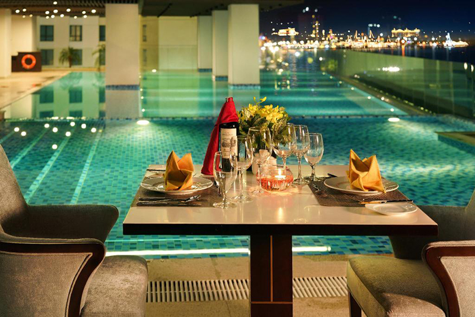
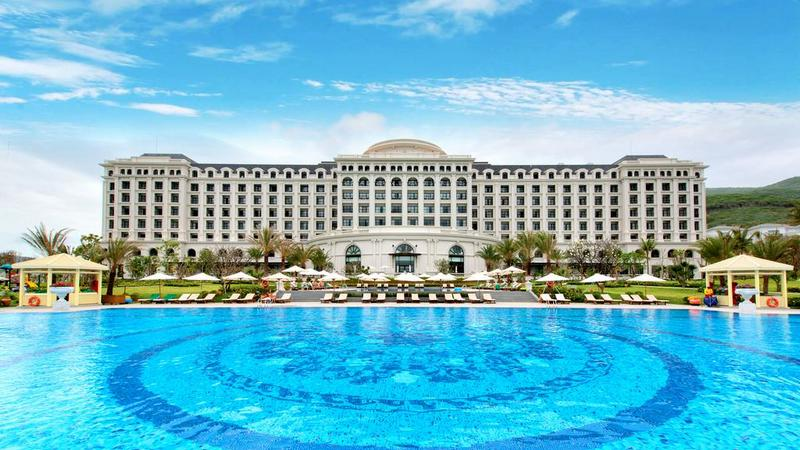
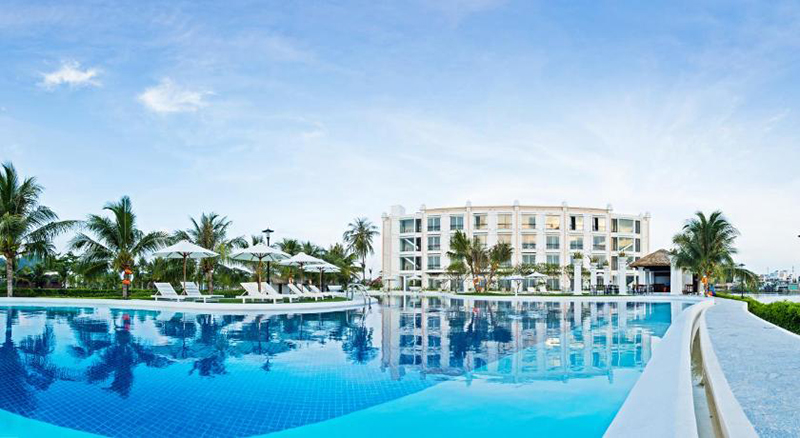
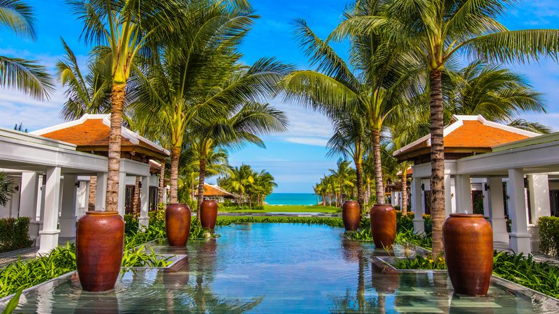
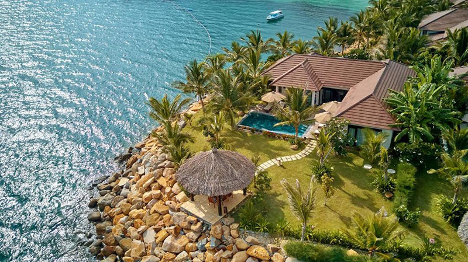
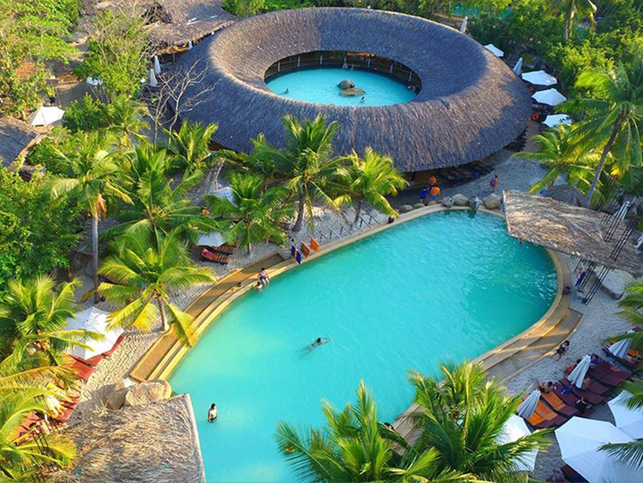
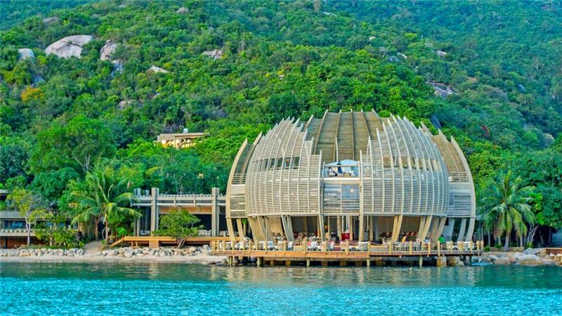
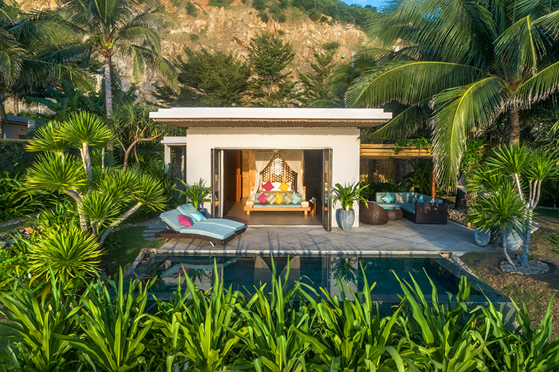
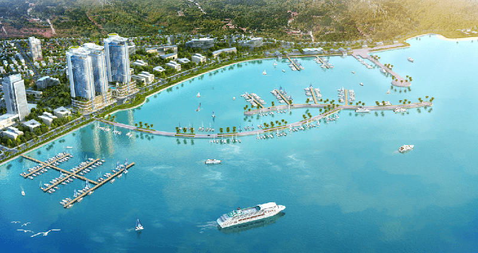

Được biết đến là 1 trong 29 vịnh đẹp nhất thế giới, thành phố Nha Trang may mắn sở hữu nhiều bãi biển đẹp hút hồn, và cũng là nơi khiến bạn phải ngỡ ngàng với những khu nghỉ dưỡng sang trọng mà ai cũng muốn check-in một lần.

Một trong những sản phẩm tuyệt hảo của tập đoàn Vingroup tại Nha Trang chính là Vinpearl Condotel Beachfront Nha Trang,
nơi hội tụ những ưu điểm vượt trội nhất của hai mô hình kinh doanh: căn hộ và khách sạn. Tọa lạc trên cung đường đẹp nhất Nha Trang,
Vinpearl Condotel Beachfront Nha Trang sở hữu hệ thống tiện ích và dịch vụ cao cấp mà một khách sạn chuẩn 5 sao phải có, và cả
trung tâm thương mại Vincom sầm uất. Tại đây, bạn không chỉ hưởng trọn sự thuận tiện về giao thông, tham quan, du lịch, mà còn được sống
trong không gian nghỉ dưỡng thoáng đãng, thư giãn tuyệt đối.

Được xây dựng trên đảo Hòn Tre riêng biệt, Vinpearl Discovery 1 Nha Trang hiện ra như một cung điện nguy nga, tráng lệ thời Victoria
được bao quanh bởi cây cối và bãi biển xanh mướt vô tận. Hệ thống khách sạn và biệt thự tại Vinpearl Discovery Nha Trang đều được trang
bị nội thất hiện đại và sang trọng nhưng không kém phần gần gũi với thiên nhiên. Với khuôn viên rộng lớn và sạch sẽ, bạn có thể tham gia
vô số các hoạt động ngoài trời trong ánh nắng dịu nhẹ và làn gió se mát đặc trưng của đảo khơi. Nếu gia đình bạn có trẻ em, chắc chắn các
bé sẽ mê tít vì tại Vinpearl Discovery 1 có Kids Club lớn nhất đảo Hòn Tre cùng nhiều trò chơi thú vị cho các bé ở mọi lứa tuổi.

Nép mình trên ốc đảo xanh tươi, nơi con sông Cái chảy ngang qua thành phố, Champa Island Resort & Spa Nha Trang nổi bật với nét kiến trúc
Chăm hùng vĩ – đặc trưng văn hóa của tỉnh Khánh Hòa. Champa Island Resort & Spa Nha Trang là khu liên hợp nghỉ dưỡng và tham quan du lịch
đặc sắc giữa lòng thành phố. Tại đây, bạn có thể tận hưởng không gian sống yên bình, thư thái bao bọc bởi biển trời, sông núi, và hệ sinh
thái đa dạng. Đặc biệt, Champa Island Nha Trang còn có khu chiếu phim ngoài trời duy nhất tại Nha Trang. Còn gì lãng mạn và “cool” bằng, khi
được thả mình trên những chiếc ghế lười rộng rãi để thưởng thức những bộ phim hay và các món ăn đường phố cực kỳ hấp dẫn.

The Anam Resort Nha Trang tọa lạc tại Khu du lịch Bắc bán đảo Cam Ranh, tỉnh Khánh Hòa, cách sân bay quốc tế Cam Ranh khoảng 11km và cách
trung tâm thành phố Nha Trang khoảng 25 km. Kiến trúc của The Anam Resort Nha Trang là sự kết hợp tinh tế giữa vẻ đẹp cổ điển Pháp và nét
duyên dáng của Việt Nam. Là một thành viên của World Luxury thuộc Worldhotels, với chất lượng dịch vụ không chê vào đâu được, The Anam Resort
Nha Trang liên tục được vinh danh tại các cuộc bình chọn du lịch uy tín trong và ngoài nước kể từ khi thành lập đến nay.

Một thành viên ưu tú khác của Worldhotels mà Klook muốn giới thiệu cho bạn, đó chính là Amiana Resort Nha Trang. Amiana Resort nằm yên
bình trên một ốc đảo xinh đẹp, chỉ cách trung tâm thành phố Nha Trang khoảng 5km về phía Bắc, với view cực đẹp – chắc chắn sẽ chiều lòng
các #teamKlook ưa sống ảo. Từ bất kỳ góc phòng nào ở resort Nha Trang này, bạn cũng có thể chiêm ngưỡng cả bầu trời xanh ngắt nổi bật trên
làn nước sóng sánh ngoài kia. Điểm đặc sắc của Amiana Resort Nha Trang nằm ở lối bài trí, sắp đặt của kiến trúc, khéo léo mang đến cho bạn
một không gian mở, hòa quyện với thiên nhiên, đồng thời vẫn giữ được sự riêng tư kín đáo tuyệt đối, để bạn hoàn toàn yên tâm thư giãn và
nuông chiều bản thân. Và cũng giống như The Anam Resort, Amiana Resort thu về rất nhiều giải thưởng du lịch danh giá và nhận được vô số đánh
giá xuất sắc từ du khách.

Nằm xa trung tâm thành phố, I-resort Nha Trang nổi bật với tổng thể được bao bọc bởi dáng núi hùng vĩ và dòng sông Cái uốn lượn, kết hợp với
lối kiến trúc độc đáo sử dụng các vật liệu địa phương như gỗ, đá, lá dừa nước. Chính thiết kế đơn giản, gần gũi, mà tinh tế sẽ tạo cho bạn một
cảm giác thư thái lạ thường, xua tan mọi căng thẳng mệt nhọc thường ngày. Tại I-resort Nha Trang, bạn sẽ được chăm sóc sức khỏe bằng phương pháp
kết hợp y học cổ truyền và Tây y mang đậm phong cách spa.

Nằm trong vịnh Ninh Vân xinh đẹp, An Lâm Resort Nha Trang, hay còn được biết với tên đầy đủ là An Lam Retreats Ninh Van Bay, hiện ra giữa núi
rừng thanh bình với thác nước tự nhiên và bãi biển dài vô tận. Đến đây, bạn sẽ được thả mình giữa khung cảnh êm đềm xuyên qua khu rừng nhiệt
đới xanh mát và đá tự nhiên hùng vĩ, đem lại cảm giác riêng tư và biệt lập, cùng với những tiện nghi hiện đại cùng dịch vụ hoàn hảo.

Nằm ngay giữa sân bay Cam Ranh và thành phố Nha Trang. Tổng thể khu nghỉ dưỡng 5 sao này được phân bố ở 2 độ cao khác nhau:
khu bên trên như được tạc ra từ trong núi, nhìn xuống bãi cát trắng mịn bên bờ vịnh, phần còn lại nằm ở các khu vực khác trong khuôn viên nghỉ dưỡng.
Đặc biệt, ẩm thực tại Mia Resort được thiết kế theo phong cách Fusion – kết hợp giữa Việt Nam và Tây Âu, phù hợp với khí hậu và không khí nơi đây,
hứa hẹn đem đến cho bạn những bữa ăn chất lượng tuyệt vời bên người thân và bạn bè. Giữa không gian xanh tươi, đất – trời là một, tất cả những gì bạn
cần làm là hít thật sâu, thở thật nhẹ và tận hưởng những giây phút thư giãn tại Mia Resort Nha Trang.

Nếu bạn muốn “hide-away” ngay tại trung tâm thành phố Nha Trang, thì La Luna Resort Nha Trang là một lựa chọn đúng đắn. Tọa lạc ngay khu vực chân núi
Cô Tiên, bên cung đường Trần Phú – Phạm Văn Đồng, nơi luôn tấp nập, nhộn nhịp các dịch vụ du lịch, tại La Luna Resort Nha Trang, bạn có thể ngắm nhìn
trọn vẹn toàn cảnh Nha Trang đẹp như tranh. Với vị trí “tựa sơn nghinh thủy” cùng kiến trúc mang đậm phong cách châu Âu sang trọng, khu nghỉ dưỡng này
chắc chắn đem lại cho bạn một không gian nên thơ, lãng mạn, với những dịch vụ du lịch đẳng cấp quốc tế. Hiện khu nghỉ dưỡng này vẫn đang trong quá trình
thi công, nhưng cũng rất đáng để bạn cân nhắc cho những lần du lịch Nha Trang năm sau đó nghen.